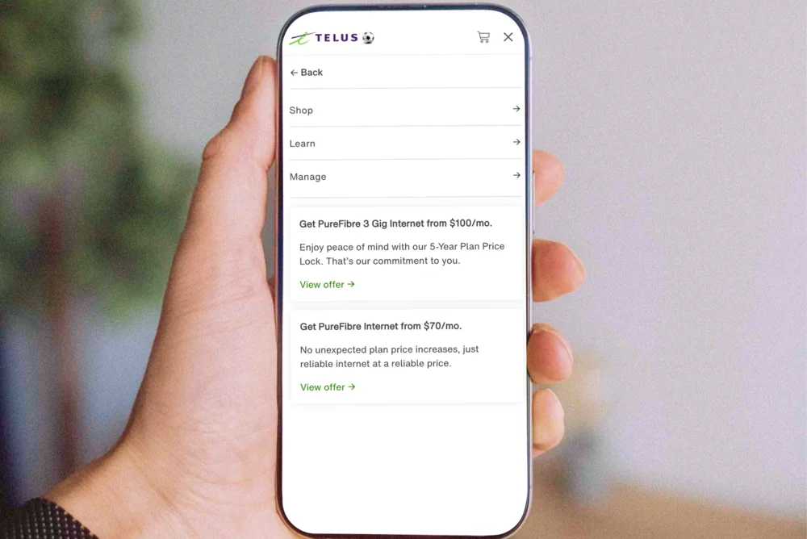

Select projects showcasing a primary focus on UX/UI design, with additional work across graphic design, creative coding, and installation design.

Telus: Enterprise IA Refresh
End-to-end navigation redesign for Canada's second-largest telco, working within Telus's design system alongside developers and a user researcher. Ran A/B testing to validate the new IA before launch, driving a 42% increase in desired page visits.
Restructuring the Telus internet Plans Page so prospective customers could commit to a plan without being pushed, with educational elements woven through the card design. Reworked the journey for each behavioural segment the client supplied, then A/B tested the new structure before launch.
Login flow design within IBM's Carbon Design System, delivered as a preferred vendor through All Purpose Creative. Worked within an established, developer-facing system; most visual deliverables are under NDA.
Owned the full lifecycle for Vancouver's largest B-Corp carsharing coop, from initial site audit through launch. Mapped functional flows across marketing and member touchpoints, working with developers in an agile process.
End-to-end product catalogue for a contemporary Scandinavian furniture studio, including the landing page, built with a structure ready to grow into e-commerce. Worked directly with the developer through fortnightly check-ins to deliver on a quick turnaround.
Designed and built an interface for gallery visitors to scan a QR code and send text + images from their phone to a live receipt printer, bridging digital and physical.
An analogue-to-digital visual synthesizer with a custom 3D-printed controller, built as part of an MA thesis exploring co-creation between hand, hardware, and real-time visuals.